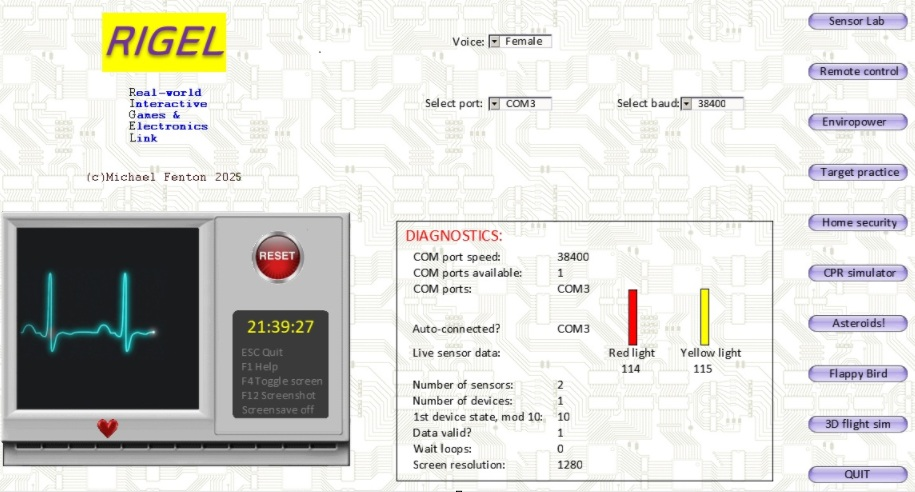
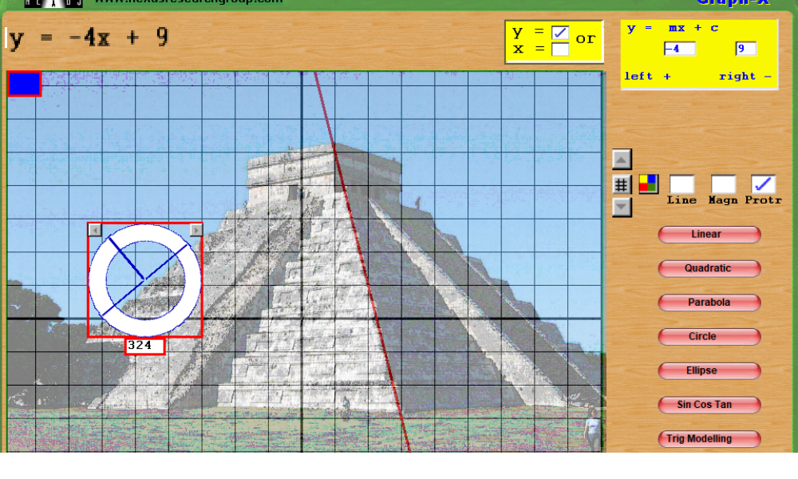

Game design as a vehicle to teach STEM
Game design software transforms classrooms into creative laboratories where learners build, test, and apply knowledge across subjects. Michael Fenton has taught game design and presented his work at education conferences across New Zealand, showing how accessible game tools can act as both a creative outlet and a scientific instrument. As a proof of concept, his RIGEL system proves game engines can link to low-cost sensors and microcontrollers to create authentic, hands-on STEM learning experiences.
Key ideas
- Michael uses game design to integrate the creativity in science with the creativity in music, art, acting and the learners imagination.
- Iterative learning cycle: Build, test, use fosters experimentation, peer review, and reflective improvement.
- Physically active computing: Movement-based controllers promote fitness and embodied learning while teaching control systems and feedback loops.
- Authentic assessment opportunities: Projects produce measurable outputs and artifacts that demonstrate problem solving, creativity, and technical competence.
- Cultural and language inclusion: Systems can present interfaces and audio in multiple languages, supporting diverse learners and local contexts.
- Integrates music, art, theatre and drama into game development and STEM software development.
- Safe, inquiry-driven science: Games by teachers or students can simulate real-world concepts and built real-world understanding in the process.
How game design enables cross-curricula STEM learning
Game design projects require and reinforce core STEM and arts skills simultaneously. Coding projects teach logic, sequencing, and debugging while exposing learners to variables, loops, and event-driven programming.
Designing game physics helps students understand motion, forces, and rates of change through direct manipulation of simulated objects. Creating game assets develops spatial reasoning and graphic design skills as students work with coordinates, symmetry, and visual composition.
Adding voice-over acting and sound design builds communication skills, narrative sense, and confidence in performance. Michael’s approach uses game software to interpret sensor inputs as game controls, turning physical phenomena into data that students can visualize and analyse inside a game environment.
Download "Get out!" voice acting file from Transylvania Apple II adventure game remake [WAV]
Pedagogy - Build it, Test it, Use it
Michael Fenton’s pedagogy provides a clear, iterative workflow for inquiry-based learning that fits diverse classrooms. Students first build user interfaces and simple games with block-based coding to lower entry barriers. They then test and peer-review each other’s projects to promote collaboration and critical feedback.
Some games require graphic design skills, a background music score, sound effects, or voice-over acting. This is where the fun builds as individual work evolves to include others in class. New friendships form.
Some learners may prefer to work on an existing 'game' where they connect DIY or low-cost sensors to the game environment to make their real-world movements control virtual players. This sequence supports low-floor, high-ceiling tasks that scale from novice to advanced learners.
Implementation tips
Start with block-based game engines to teach interface design and basic logic. Begin with a teacher-led simple maze game, moving to learners own additions, personalisation and improvements. Provide examples of static image text-based adventure games (e.g., Apple II 'Transylvania'), side-scrolling, and first-person 3D games. Allow learners to play test examples and choose a genre to develop. Provide / develop sensors that measure changes in resistance, voltage or light to replace keyboard or mouse events.
Design short, structured worksheets that guide students through building, peer-testing, and adapting their apps to use sensor data. Encourage aesthetic and narrative choices to keep learners engaged and to integrate Arts and Music learning outcomes alongside STEM outcomes.
"'Build it' Game Maker uses drag and drop block coding and GML coding language. This permits low floor, high ceiling and differentiated learning.
"'Adventure game example' By playing games learners anaylse what feature makes a game engaging. Art, sound, narrative, rewards and penalties!
"'Side scroller game example' TV and movies can inspire learners by their visuals and soundscape. Gerry Anderson's Stingray - 'Stand by for action!
"'3D first person game example' Spatial concepts of perspective, angles, coordinate systems. Assigning roles for graphic design, sound effects and music, and player mechanics. Or just evade being exterminated by Daleks!
Practical classroom examples
- Use light-dependent resistors or a motion sensor to translate speed of pedalling on an exercise bike to control the vertical position of a virtual spaceship. This combines physical activity with mathematics and programming.
- Attach simple respiration and heart compression pressure sensors to practice CPR timing in a gamified simulation, building health knowledge and procedural confidence.
- Build simple light or temperature sensors and visualise readings in a game lab dashboard, reinforcing data interpretation and graphing skills.
Game design naturally integrates mathematics, physics, coding, art, and performing arts into single projects.

Download the RIGEL example screenshots [PDF]
Real-world simulations
Older students can take advantage of game mechanics and the highly visual nature of games to create fun simulations for Biology, Chemistry, Mathematics and other STEM subjects.

"'DNA electrophoresis simulator' Compare family genetics, identify the virus, analyse the crime scene. All build learners knowledge of physics (static fields), biology (genetics) and chemistry

"'Graph explorer' Find the maths in real-world images. Explore architecture, natural geometries, facial symmetry, and Google Earth images. Fit equations to any images to appreciate the beauty in equations.
Conclusion
Game design software is a versatile educational tool that builds confidence and deepens subject knowledge by turning abstract concepts into playful, measurable interactions. Michael Fenton’s RIGEL work illustrates a scalable model for bringing authentic science, computing, and creative practice into classrooms using low-cost, student-centred technology.
YouTube videos
Michael has documented many of his projects in YouTube videos. Here the low cost game pad controller is used with Game Maker to create a 3D flight simulator. A new use for a discarded exercise bike!